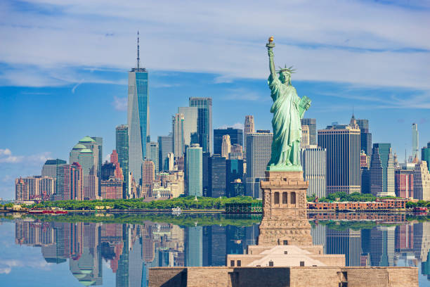

Коротка характеристика
Нью-Йорк — найбільше місто США, світовий центр фінансів, культури та мистецтва, що складається з п'яти боро.
Чому я обрав(ла) це місто
Нью-Йорк надихає своїм ритмом і різноманіттям: за один день можна побувати в музеї, парку, на Бродвеї й спробувати кухню з усього світу.
Цікаві факти
- Статую Свободи, подарунок від Франції, відкрили у 1886 році.
- Емпайр-стейт-білдінг завершили будувати у 1931 році.
- Нью-Йорк складається з п'яти боро: Мангеттен, Бруклін, Квінз, Бронкс і Стейтен-Айленд.
Визначні місця
- Статуя Свободи
- Центральний парк
- Емпайр-стейт-білдінг
- Бруклінський міст
Моя оцінка
9 з 10